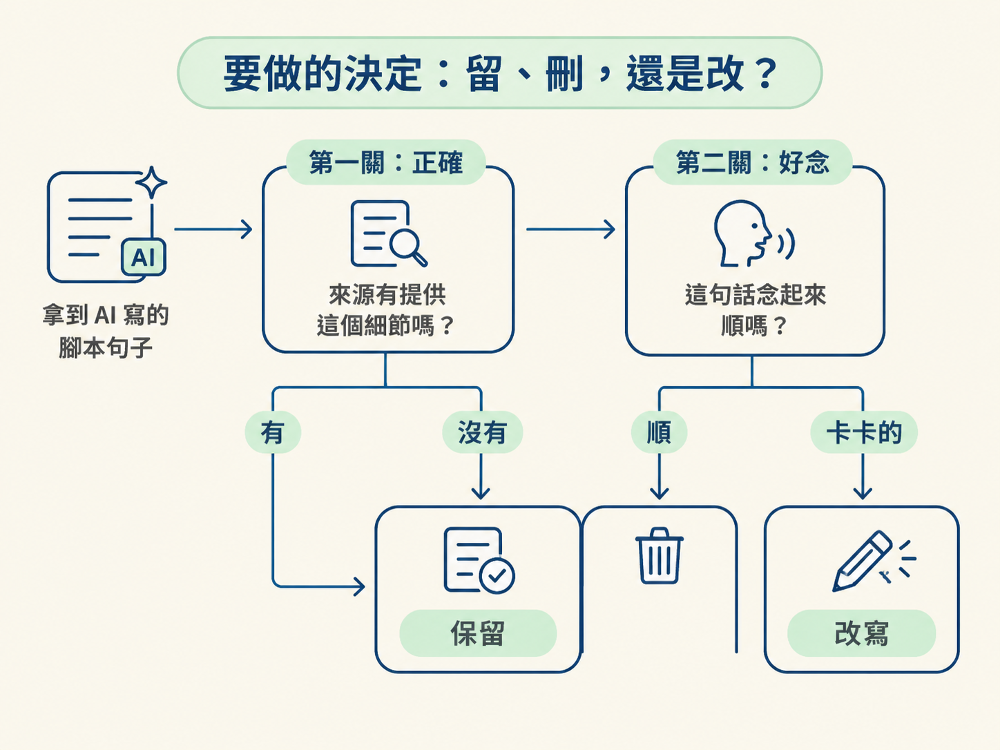
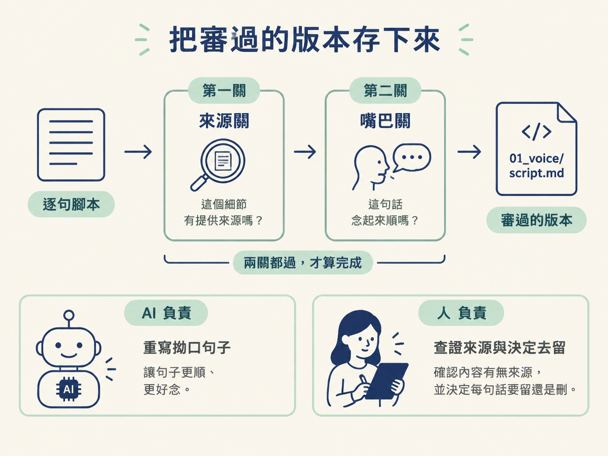

上一課你拿到的是 AI 寫出的腳本初稿。這一課不急著錄音，而是先把稿子逐句檢查一遍：哪些內容有來源支持、哪些是 AI 自己補上的，以及哪些句子雖然正確，卻不適合拿來朗讀。
你要交出的成果，是一份可以直接交給旁白錄製的正式腳本，存放在 01_voice/script.md。它之後會有兩個用途：旁白照著它念，也會拿來和錄好的音訊對照。
AI 寫的句子常常很順，順到讓人以為內容一定沒問題。但「讀起來像樣」和「來源真的有提供」是兩回事。審稿時，你要在這兩股力量之間做選擇，並且把忠於來源放在前面。
| 句子的狀況 | 你要問的問題 | 處理方式 |
|---|---|---|
| 細節在來源裡找得到 | 這句話有依據嗎？ | 保留 |
| 細節是 AI 自己補的 | 來源有提供這件事嗎？ | 刪除 |
| 內容正確，但念起來卡 | 這句話能順順念出來嗎？ | 改成更簡單的說法 |
這張表的重點是：正確和好念要分開檢查。一句話可能有根據，卻很拗口；也可能朗朗上口，卻多了來源沒有的內容。前者要改，後者要刪。

逐句讀稿時，先不要被流暢的文字帶著走。看到具體細節，就問自己：這個資訊，來源裡有嗎？
以共同範例來看，原始 note 只有一句：「Sam will send the draft on Friday.」。這句話提供的資訊其實很有限，只有三個重點：
因此，像「Sam, send the draft Friday.」這樣的句子，只要保留這三個重點，就和來源一致。你可以把便利貼和行動卡並排讀一次，確認人物、動作與時間沒有被改掉。
如果腳本突然出現日曆上的具體日期，或寫成 Sam 還要完成另一項任務，就要停下來檢查。來源只說「週五」，沒有提供那個具體日期，也沒有交代額外任務。即使這些補充看起來很合理，也應該刪除。
確認每個細節都有來源之後，再進行第二關檢查：這句話，你能順順念出來嗎？
請把腳本實際念出聲。旁白是給耳朵聽的，不是只給眼睛掃過去的文字；安靜閱讀時看不出的問題，念出來通常會立刻浮現。只要遇到舌頭打結，或是一口氣念不完，就把那句標記起來。
接著可以請 AI 用更簡單的方式重寫同一句話。不過要記得，改的是說法，不是意思。以 Sam 的例子來說，人物仍然是 Sam，動作仍然是送草稿，時間仍然是週五，不能因為想讓句子好念，就順手改掉其中一項。
最容易誤留的內容是具體日期。AI 看到「週五」，可能自動換算成某個月某日，讓句子看起來更完整。但來源從頭到尾只提供「週五」，那個日期是 AI 自己推測出來的，不是你手上的材料能支持的事實。
另一個常見情況，是 AI 替 Sam 多加一個任務，讓故事聽起來更豐富。這也一樣不能保留。這些內容看似加分，實際上卻讓影片偏離來源；刪掉之後，腳本反而更準確。
所以，當你發現「刪掉好像很可惜」時，可以回到一個簡單的判斷：觀眾能不能從來源裡找到這件事？找不到，就不要讓它進入影片。
逐句完成兩關檢查後，把最後採用的版本存成正式腳本：
01_voice/script.md。這就是這一步的分工：AI 可以協助你重寫拗口句子，但由你檢查內容是否有來源、決定每句話要留還是要刪。完成後，你手上就有一份可以交給旁白錄製的腳本，而不是一份看起來很完整、卻混入猜測的稿子。

先用來源檢查內容，再用嘴巴檢查說法。來源有的細節才保留，AI 自己補的內容要刪；意思正確但念起來不順，就改成更簡單的句子。最後把定稿存進 01_voice/script.md，作為配音稿和之後比對音訊的依據。
下一步要決定的是：這份腳本要由你自己錄音，還是交給語音服務念出來。下一課會把這兩條路線放在一起比較，並提醒你送出請求前要先確認哪些事情。